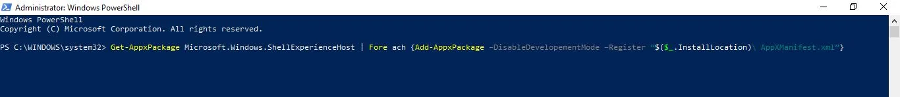

<app-home >

  <main>
    <div class="about-image">
      

    </div>
    <div class="about ">
      <app-about-text class="about-text">
        <h1 heading>Привет! Меня зовут Егор</h1>
        <p text> Сейчас я расскажу мемного о себе.<br>
          Мне 22 года, я родился в Перми, отучился в Пермском Химико-технологическом техникуме. Сейчас прохожу учебу на платформе онлайн обучения GeekBrains(не советую эту платформу. Расскажу об этом позже)<br>
          Я занимаюсь программированием. На данный момент я изучаю фреймворк Angular от компании Гугл. Я считаю, что это единственный полноценный
          <a class="underline" target="_blank" href="https://ru.wikipedia.org/wiki/JavaScript">JavaScript</a>&nbsp; фреймворк, потому что в нем есть абсолютно все, что нужно для комфртной разработки
          <a class="underline" href="https://en.wikipedia.org/wiki/Single-page_application">SPA</a> и <a href="https://en.wikipedia.org/wiki/Progressive_web_app">PWA</a>&nbsp;приложений.
          <br>
          Что вообще имеет на борту Anggular(до версии 2 AngularJS):<br>
          <b>1.</b> поддержка CSS препроцессоров изкоробки. При создании нового приложения CLI предлагает его выбрать.
          <br>
          <b>2.</b> Куча встроенных модулей Плюс Angular-material, некоторые его фишки заюзаны при создании этого сайта.
          <br>
          <b>3.</b> Поддержка старых версий. Мы можем создать приложение на 15 версии и оно будет прекрасно работать на версии 9 и ниже.
          <br>
          <b>4.</b> Полная поддержка работы с HTTP запросами. Это модуль HttpClient(самый полезный как по мне).
          <br>
          <b>5.</b> поддержка <a class="underline" href="https://angular.io/guide/universal" target="_blank">SSR</a>. Это когда мы получаем уже по сути собранную странице от сервера(Angular Universal Library).
          <br>
          <b>6.</b> Очень удоный CLI. Интерфейс командной строки, который очень сильно облегчает нам работу. <br>
          <br>
          <br>
          <b class="text-xl  mt-16">Чуть ниже представлены мои несколько проектов, написанные на данной технологии</b>
        </p>
      </app-about-text>
    </div>
    <div class="projects absolute left-1/2" >
      <li *ngFor="let project of projects; " class=" mb-72 top-0">
        <div class="project-card absolute left-44 block max-w-sm  p-6 bg-white border border-gray-200 rounded-lg shadow hover:bg-gray-100 dark:bg-gray-800 dark:border-gray-700 dark:hover:bg-gray-700">
          <h1 >{{project.name}}</h1>
          <p >{{project.description}}</p>
          <a  href="{{project.link}}" target="_blank" class=" get-info  uppercase px-5 py-2" >
            see the project
          </a>
        </div>
      </li>

      <app-about-text class="about-text-secondary">
        <p text> Как мы,  в принципе, видим, это достаточно мощная <b style="text-decoration: line-through">машина</b>&nbsp;технология, но на самом деле, я считаю что главное составляющее в Angular - это
          <a href="https://rxjs.dev" class="underline">RxJs</a>. Потому что какая же реактивность без быстрого ответа от скриптов?<br>
          Реактиности не будет.. JavaScript это сам по себе не особо быстрый язык, но эта пробема уже решена библиотекой RxJS, которая в себя включает много разных функций. С абсолютно всеми я не знаком, но самый часто используемы знаю хорошо
          <br>
          <b>Такие как: </b><br>
          <b>1.</b>&nbsp;map() - функция высшего порядка, отвечающая за трансформацию элемента, идущего из потока данных
          <br>
          <b>2.</b>&nbsp;ofType() - фукция для приведения типов. Позволет на лету
          <b style="text-decoration: line-through">выцепить</b>&nbsp;достать  элемент из потока и привести его к нужному типуБ либо к функции(часто испозуетя при работе с
          <a href="https://ngrx.io" class="underline">NgR</a> x, пример можно посмотреть выше)<br>
          <b>3.</b>&nbsp;filter() - функция для фильтрации
          элементов в стриме. Испльзуется в
          основном когда надо получить какой-то
          определенный тип, но на вход идет неизвестно
          что. Например, если мы работаем с бэкендом и нам
          идет массив чего-то, мы не знвем чего, мы использем
          filter(Boolean), если все нормально, то мы парсим этот
          массив  и достаем все нужные поля из его составляющих
          <br>
          <b>4.</b>&nbsp;switchMap() - функция высшего порядка, отвечающая за отложенное трансформоровение всего потока. Очень часто используется при работк с Redux, чтобы отлавливать выполнение прописанных действий в редюсерах(пример кода выше).
          <br>
          <b>5.</b>&nbsp;of() - функция для создани потока из эелементов.
          <br>
          <b>5.</b>&nbsp;combineMultiple() - Функция для комбинирования 2-х потоков. Спасает, когда надо взять данные из двух, а отписку второй раз неохота делать.
          <br>
          <b>6.</b>&nbsp;subsribe()/unsubscribe() - Сами, наверное, уже пняли для чего эти звери требуются.
          <br>
        </p>
      </app-about-text>
      <div class="attempt w-60 absolute border-red-700 px-5 py-7">

        <h3>Внимание</h3>
        <p>о время работы с RxJs мы работаем не напрямую с дынными, а с его внутренними конструкциями
          <a href="https://rxjs.dev/guide/observable">Observvable's</a>&nbsp;На них нужно подписываться и отписыватьсяю Еслы вы как и я работаете с RxJS в Angular, то делайте это в хуке жизненного цикла
          <a href="https://angular.io/guide/lifecycle-hooks">OnDestroy</a>, инае эта подписка мжет стоить вам вечной загрузки страницы и оперативной памяти потребителя
        </p></div>
      <div class="projects-rx  absolute left-1/2" >
        <li *ngFor="let project of rxProjects; " class=" mb-72 top-0">
          <div class="project-card absolute left-44 block max-w-sm  p-6 bg-white border border-gray-200 rounded-lg shadow hover:bg-gray-100 dark:bg-gray-800 dark:border-gray-700 dark:hover:bg-gray-700">
            <h1 >{{project.name}}</h1>
            <p >{{project.description}}</p>
            <a href="{{project.link}}" class=" get-info  uppercase px-5 py-2">see the project</a>
          </div>
        </li>
      </div>

      <app-about-text class="about-text-c-sharp">
        <p text> Это в общем-то все, что я хотел сказать об  Angular.  До Angular я изучал язык <a class="underline" href="https://ru.wikipedia.org/wiki/C_Sharp">C#</a>.Это достаточно мощный язык программирования, применяемы в нескольких отрачлях
          <br>На нем можно писать как бэкенд, так и некоторую часть фронтенда. Для бэкенда в основном используется <a
            href="https://dotnet.microsoft.com/en-us/apps/aspnet" class="underline">ASP.NET</a>&nbsp;в качестве платформы для написания
          <a href="https://ru.wikipedia.org/wiki/API" class="underline">API</a>
          для какого-либо вашего продукта, будь то сайт или социальная сеть. Безусловно, все это можно можно написать и на JS, но ASP.NET в этом плане показывает себя намного стабильнее, чем тот же
          <a  class="underline" href="https://expressjs.com/ru/">Express</a>, поэтому если будет выбор на чем написать бэк, то я бы выбрал C#, несмотря на то, что он порадком сложнее, чем тот же
          <a href="https://ru.wikipedia.org/wiki/TypeScript" class="underline">TypeScript</a> или JS. Так же этот язык активно используют в геймдеве. В движке
          <a href="https://ru.wikipedia.org/wiki/Unity_(игровой_движок)" class="underline">Unity</a>. Сам движок написан на C++, но как язык скриптов там используется C#, который компилируется в C++ на выходе. Unity я попробовал изучить и мне немного понравилось, но это было временно. Я попробовал создать игру на этом движке и она получалась, но я оставил эту идею, потому что у меня не хватает в этом деле знаний.
          ASP.NET у меня проа не выходит понять как работает. НО я смог разобраться в в более интересной фишке этого языка -
          <a href="https://learn.microsoft.com/ru-ru/dotnet/desktop/wpf/overview/?view=netdesktop-6.0" class="underline">WPF</a>. Это тоже достаточно мощная тезнология, которая работает на 60% на верстке(я зык XAML). Что позволяет делать достаточно большие приложеня и так же связывать их с тем же Unity и ASP.NET.
          Для вебдева некоторе время азад появились <a href="https://learn.microsoft.com/ru-ru/aspnet/core/razor-pages/?view=aspnetcore-6.0&tabs=visual-studio" class="underline">Razor Pages</a>. Это по сути скриптовая привязка фронтенда в плотную к бэкенду. Я считаю, что такого быть не должно, потому что фронтенд немдолжен вообще знать о том, что происходит на бэке
        </p>
      </app-about-text>
      <div class="projects-sharp absolute left-1/2" >
        <li *ngFor="let project of sharpProjects; " class=" mb-72 top-0">
          <div class="project-card absolute left-44 block max-w-sm  p-6 bg-white border border-gray-200 rounded-lg shadow hover:bg-gray-100 dark:bg-gray-800 dark:border-gray-700 dark:hover:bg-gray-700">
            <h1 >{{project.name}}</h1>
            <p >{{project.description}}</p>
            <a href="{{project.link}}" class=" get-info  uppercase px-5 py-2">see the project</a>
          </div>
        </li>
      </div>
      <app-about-text class="about-text-python">
        <p text> Про C# я больше ничего не могу написать.  До Angular я изучал язык <a class="underline" href="https://ru.wikipedia.org/wiki/Python">Python</a>.Тоже достаточно мощный язык, но мне он как-то не особо нравится
          . Меня в нем отпугивает отсутствие скобок любых. Ведь скобки это окраничитель отвественности определенного участка кода и у меня несколько раз было такре, что я путался в функциях пока писал скрипт, потому что отсутствуют ограничения. Но единственно, что в этом языке ррадует - это то, что если ты пишешь что-то, то оно в любом случае будет работать, только непонятно как.
          На этом язке я пробовал тоже некоторые вещи делать: игры, рисовалки двже бекэенд писал на нем с помощью фреймворка <a href="https://ru.wikipedia.org/wiki/Django" class="underline">DJango</a>, но мне приходилось постоянно чинить косяки разработчиков и в итоге я полностью отказался от этого языка. Так же я писал ботов для телеграма на нем.
        </p>
      </app-about-text>
      <div class="projects-python absolute left-1/2" >
        <li *ngFor="let project of pythonProjects; " class=" mb-72 top-0">
          <div class="project-card absolute left-44 block max-w-sm  p-6 bg-white border border-gray-200 rounded-lg shadow hover:bg-gray-100 dark:bg-gray-800 dark:border-gray-700 dark:hover:bg-gray-700">
            <h1 >{{project.name}}</h1>
            <p >{{project.description}}</p>
            <a href="{{project.link}}" class=" get-info  uppercase px-5 py-2">see the project</a>
          </div>
        </li>
      </div>
    </div>
    <div class="skills">

    <mat-tab-group label="Мои Умения" class=" skill-tab">
      <mat-tab label="C#">
          <sharp-tabs></sharp-tabs>
      </mat-tab>
      <mat-tab label="Python">
        <python-tabs></python-tabs>
      </mat-tab>
      <mat-tab label="Angular">
        <angular-tabs/>
      </mat-tab>
    </mat-tab-group>


    </div>

  </main>


</app-home>
